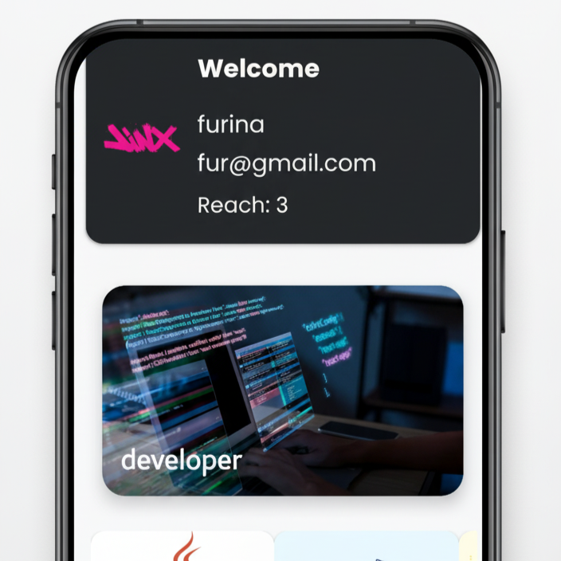

Jorge Uriel C Mtz
Developer & Web Designer
🌎 Languages
Español - Nativo
Inglés - Intermedio
Español - Nativo
Inglés - Intermedio
Desarrollé una aplicación web utilizando Spring Framework con Hibernate para la gestión de empleados y usuarios, conectada a una base de datos MySQL.
ver repositorio
Desarrollé una aplicación móvil utilizando Android Studio con Java y Firebase, que permite a los usuarios autenticarse y gestionar su información de manera interactiva. La aplicación incluye funcionalidades para crear y almacenar notas, guardar información personal, visualizar imágenes y reproducir música, así como un chat básico para interactuar con otros usuarios. La implementación garantiza un manejo eficiente de datos en tiempo real y una experiencia de usuario fluida.
ver repositorio
Desarrollé una página web educativa para la visualización y repaso de los temas fundamentales del idioma inglés, utilizando HTML, CSS y JavaScript. La aplicación incorpora almacenamiento local con archivos JSON, permitiendo una gestión eficiente de los contenidos y una experiencia de aprendizaje interactiva para los usuarios.
ver repositorio
Compilé una carpeta de ejemplos de código en Java, que incluye implementaciones de conceptos y estructuras fundamentales del lenguaje. Este proyecto refleja mi conocimiento práctico en programación orientada a objetos, manejo de estructuras de control, colecciones y buenas prácticas en desarrollo Java..
ver repositorio
Desarrollé una aplicación web utilizando Spring Framework, Java, Thymeleaf y Hibernate, enfocada en la seguridad y autenticación de usuarios mediante Spring Security. La aplicación permite la asignación de roles de Administrador y Usuario, controlando el acceso a la gestión de empleados y garantizando la protección de la información sensible.
ver repositorio